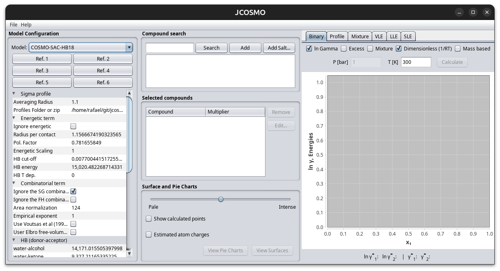

JCOSMO Installation
Download JCOSMO
Access the JCOSMO website, enter with your user or register to get acess to the ZIP file download.
Decompress and Run
After downloading the ZIP file (e.g., jcosmo-3.0.0.zip or a newer version), extract its contents to a folder of your choice.
Once extracted, the folder structure should look like this:
jcosmo3
├── jcosmo.exe
├── jcosmo.sh
├── license-personal.txt
├── data
├── examples
├── pars
├── profiles
└── ...
Running the Program
- Windows: Double-click
jcosmo.exe - Linux: Open a terminal and run:
cd /path/to/jcosmo3
./jcosmo.sh
JCOSMO Initial Screen
When you first run JCOSMO, the interface appears as shown below. This screenshot provides a preview of the main screen you will encounter.

This is the initial view where you can select the desired substances and initiate the available calculations within JCOSMO. Start playing with it, check the Quick Start Guide.